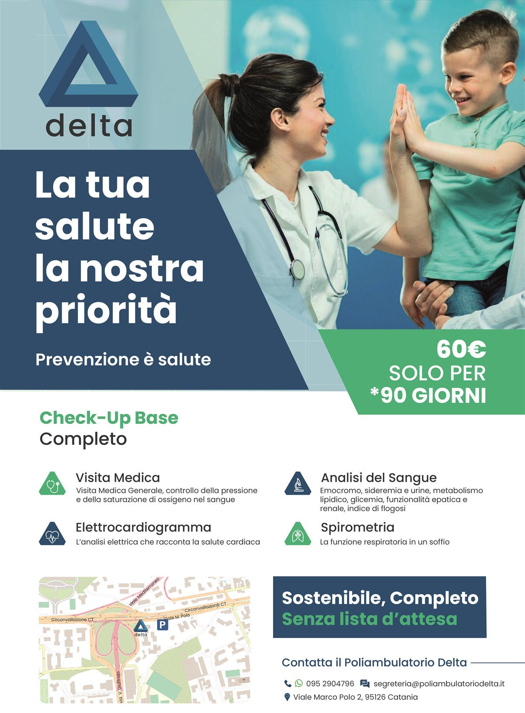

Prevenzione è salute.
Al Poliambulatorio Delta le specialistiche collaborano tra loro: cardiologia, ortopedia, endocrinologia e le altre branche lavorano in sinergia, senza le attese tipiche della sanità. Prenoti in un messaggio.
La nostra offerta attiva del momento, in primo piano per te.

Un check-up completo e sostenibile, senza lista d'attesa:
Ogni specialistica dialoga con le altre: quando serve, i nostri medici si confrontano per offrirti una visione clinica completa, non frammentata.
Visite cardiologiche, ECG ed ecocardiogramma per la salute del tuo cuore.
Scopri le prestazioniDiagnosi e cura dei disturbi metabolici e ormonali, percorsi dietologici personalizzati.
Scopri le prestazioniPiani alimentari su misura per benessere, prevenzione e obiettivi specifici.
Scopri le prestazioniDiagnosi e trattamento di articolazioni, ossa e apparato muscolo-scheletrico.
Scopri le prestazioniTrattamenti manuali per riequilibrare corpo e postura in modo naturale.
Scopri le prestazioniDiagnosi e cura di orecchio, naso e gola per adulti e bambini.
Scopri le prestazioniValutazione e follow-up delle patologie del sangue e del sistema linfatico.
Scopri le prestazioniDiagnosi e cura delle patologie infiammatorie e degenerative articolari.
Scopri le prestazioniVisite di idoneità e sorveglianza sanitaria per aziende e lavoratori.
Scopri le prestazioniAgende organizzate per garantirti puntualità: l'orario prenotato è l'orario della tua visita.
Le nostre specialistiche comunicano tra loro per offrirti una visione clinica realmente integrata.
Un'area sosta riservata proprio accanto all'ingresso, con accesso diretto tramite scala interna.
Struttura pensata per l'accessibilità: ingresso e ambulatori raggiungibili senza barriere.
Niente attese al telefono: scrivici su WhatsApp e ricevi conferma della tua visita in poco tempo.
Tocca il pulsante "Prenota su WhatsApp": si aprirà un messaggio già pronto da inviare alla nostra segreteria.
La segreteria ti risponde con le disponibilità più vicine per la branca che ti interessa.
Ricevi la conferma della visita con data, orario e indicazioni per raggiungerci in Viale Marco Polo, 2.
Viale Marco Polo è una delle arterie più accessibili della città, con parcheggio riservato a due passi dall'ingresso.
Scrivici ora su WhatsApp: ti rispondiamo con la prima disponibilità utile per la branca che ti interessa.
Prenota su WhatsApp